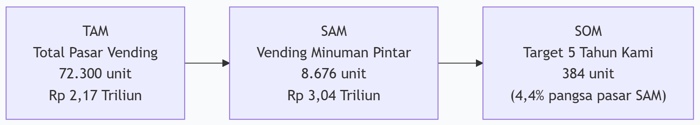
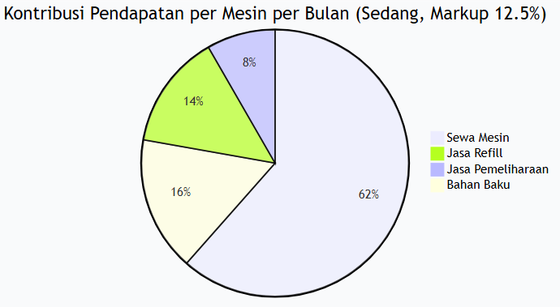
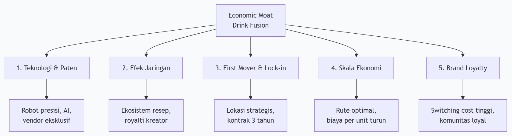
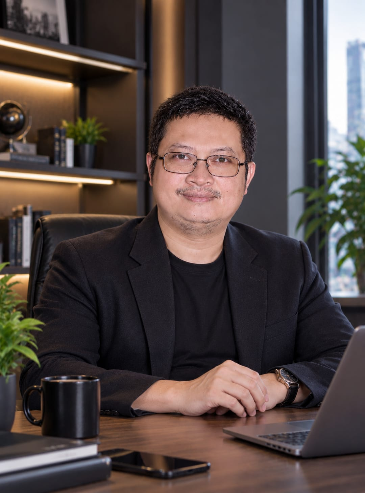

ALTaruh foto: images/founders/alexander-lie.jpg
ALTaruh foto: images/founders/alexander-lie.jpgInvestment Proposal · Drink Fusion
Barista Robot AI untuk Masa Depan F&B Indonesia
FnB Fusion Company menghadirkan “mini-café” tanpa karyawan: ribuan varian minuman segar, presisi ±2 ml/±2 g, beroperasi 15 jam sehari dengan rasa identik di setiap gelas.

Executive Summary
Bukan sekadar vending machine
Industri F&B Indonesia bernilai lebih dari USD 70 miliar dan tumbuh dua digit, namun terhambat ketergantungan barista, biaya operasional tinggi, rasa tidak konsisten, dan ekspansi yang lambat. Drink Fusion adalah robot barista AI dalam booth 3×1,5 meter yang menggantikan 3–5 barista.
384unit terpasang dalam 5 tahun
Rp 80,3 Mpendapatan Tahun 5
Rp 30,0 Mlaba bersih Tahun 5
Rp 14,4 jtpendapatan/unit/bulan
Visi
Mendemokratisasi bisnis minuman kontemporer lewat robot barista AI, sehingga siapa pun dapat memiliki “mini-café” tanpa karyawan, dengan ribuan varian rasa yang personal dan konsisten.
Ekosistem
Aplikasi mobile dengan resep kustom, berbagi resep, dan royalti kreator. Roadmap berikutnya: Food Fusion, otomasi makanan cepat saji.
Masalah & Momentum
Lima penyakit kronis industri F&B
Pasar foodservice Indonesia diproyeksikan USD 70,41 miliar (2026) dengan CAGR 12,84% hingga 2031, tetapi pelaku usaha tertekan biaya.
👥
Krisis tenaga kerja
Turnover 30–40% per tahun; rekrutmen Rp 3–5 juta per orang dan pelatihan 2–4 minggu.
🎯
Rasa tidak konsisten
Bergantung skill dan mood barista; 60%+ konsumen pernah kecewa karena rasa berbeda.
💸
Biaya operasional gila
Gaji, sewa, listrik naik terus: Rp 30–60 juta/bulan per outlet.
⏰
Jam operasional terbatas
Hanya 10–12 jam; 30–50% potensi omzet hilang.
🐢
Skalabilitas lambat
Cabang baru butuh 3–6 bulan untuk rekrut dan pelatihan.
🚀
Empat megatren
Urbanisasi, pembayaran digital (QRIS), kelangkaan tenaga terampil, dan haus personalisasi (68% konsumen).
| Aspek | Kafe Konvensional | Vending Biasa | Drink Fusion |
|---|---|---|---|
| Investasi awal | Rp 300–800 jt | Rp 20–35 jt | Rp 100 jt (DP) |
| Biaya operasional/bulan | Rp 30–60 jt | Rp 5–10 jt | Rp 6,7 jt (cicilan) |
| Variasi menu | 20–50 item | 20–30 kemasan | Ribuan kombinasi segar |
| Konsistensi rasa | Tergantung barista | Standar kemasan | 100% presisi |
| Pengalaman | Interaksi manusia | Tanpa interaksi | Avatar AI personal |
 Konvergensi megatren otomatisasi F&B di Indonesia
Konvergensi megatren otomatisasi F&B di IndonesiaSolusi
Drink Fusion: Robot Barista & Ekosistem AI
Stasiun robotik 3 m × 1,5 m × 2 m dengan layar sentuh 32 inci dan avatar AI yang menyapa, merekomendasikan menu, dan memandu pembayaran. Satu minuman selesai dalam 60–90 detik.

Perjalanan konsumen
- Avatar AI menyapa & merekomendasikan menu
- Pilih menu atau resep kustom
- Bayar QRIS / debit dalam 2–3 detik
- Robot Cartesian 4-axis meracik, mencampur, menyegel
- Lampu hijau menyala: ambil minuman Anda
| Komponen | Spesifikasi | Keunggulan |
|---|---|---|
| Robot Cartesian 4-Axis | Gerak X, Y, Z, gripper | Presisi ±0,5 mm; 60–90 detik/minuman |
| Dispenser bubuk | 16 kanister, 2–5 kg | Toleransi ±2 gram |
| Dispenser sirup | 12 tabung pompa peristaltik | Toleransi ±2 ml, anti-tetes |
| Dispenser air | Panas ±90°C, dingin ±5°C, suhu ruang | Kontrol suhu ±1°C |
| Tangki susu UHT | 5 liter, 4°C | Kunci penjualan otomatis jika >6°C |
| Soda, es batu, cup sealer | CO₂, hopper 15 kg, seal 3 detik | Higienis, tanpa sentuhan tangan |
| IoT & monitoring | 4G/WiFi, sensor tiap komponen | 87% masalah dapat didiagnosis jarak jauh |
Menu tak terbatas
Kombinasi 16 bubuk × 12 sirup × 4 cairan × es (ada/tanpa) = ribuan varian dasar, belum termasuk penyesuaian takaran. Margin kotor 50–62% per gelas.
Aplikasi mobile
Resep kustom, berbagi resep via WhatsApp/QR, feed Explore, riwayat & favorit, peta mesin terdekat, serta royalti kreator Rp 100–200 per gelas (≥30 pesanan).
Higienis & aman
Material food-grade 304 steel, pembersihan uap otomatis tiap 4 jam, inspeksi 2×/bulan, bahan baku bersertifikat halal MUI. BPOM dalam proses.
| Kategori | Contoh Minuman | Harga | Margin Kotor |
|---|---|---|---|
| Murah | Es Teh Lychee, American Dingin, Soda Jeruk Segar | Rp 8–10 rb | 52–59% |
| Sedang | Matcha Latte, Kopi Susu Karamel, Taro Milk Tea | Rp 14–16 rb | 54–59% |
| Mahal | Premium Chocolate, Red Velvet Cream, Signature Affogato | Rp 22–26 rb | 55–60% |
Pasar
Segmen minuman segar yang masih kosong
Pasar vending Indonesia bernilai USD 140 juta (±Rp 2,17 triliun) dengan CAGR 7,5%; 35% mesin baru akan memakai teknologi pintar. Belum ada pemain yang menawarkan minuman segar dengan AI dan ekosistem sosial.
72.300TAM: unit vending nasional
5.061SAM: smart vending minuman segar
384SOM 5 tahun (7,6% dari SAM)

Target pelanggan
- B2B: pemilik brand minuman 5+ outlet, kafe, minimarket, mal, stasiun, apartemen, rumah sakit
- Franchisee: profesional muda, investor pasif, UMKM, pensiunan
- Konsumen akhir: Gen Z & Milenial 17–40 tahun, beli 3–5×/minggu
Penghalang masuk
- Teknologi & paten (sangat tinggi)
- Vendor eksklusif PT. Vertexindo
- Efek jaringan aplikasi
- Lock-in lokasi strategis & skala operasi


Model Bisnis
Empat pilar pendapatan berulang
Skenario sedang (120 gelas/hari): setiap unit menghasilkan Rp 14.440.889 per bulan bagi FnB Fusion.
🤖
Sewa mesin
Rp 8.888.889/bln
61,5%
🧃
Jasa refill
5 × Rp 400.000 = Rp 2.000.000
13,9%
🛠️
Jasa maintenance
2 × Rp 600.000 = Rp 1.200.000
8,3%
📦
Bahan baku
Markup 12,5% = Rp 2.352.000
16,3%


| Tahun | Unit baru | Kumulatif | Fokus & kota |
|---|---|---|---|
| Tahun 1 | 24 | 24 | Fondasi & validasi: Jakarta |
| Tahun 2 | 72 | 96 | Akselerasi: Surabaya, Bandung |
| Tahun 3 | 96 | 192 | Skalasi: Medan, Makassar |
| Tahun 4 | 96 | 288 | Semarang, Yogyakarta, Palembang |
| Tahun 5 | 96 | 384 | Denpasar, Balikpapan, Batam, kota tier-2 |



The Deal
Proyeksi keuangan & penawaran investasi
| Rp juta | Th 1 | Th 2 | Th 3 | Th 4 | Th 5 |
|---|---|---|---|---|---|
| Total pendapatan | 5.020,8 | 20.083,2 | 40.166,4 | 60.249,6 | 80.332,8 |
| EBITDA | 755,6 | 8.544,2 | 20.066,9 | 31.489,1 | 43.010,7 |
| Laba bersih (EAT) | 368,7 | 5.782,0 | 13.887,1 | 21.913,9 | 30.018,3 |
Termsheet
- Dana dicari: Rp 7.000.000.000
- Saham: 30% (common stock)
- Pre-money Rp 16,33 M · Post-money Rp 23,33 M
- Tahap 1: Rp 5 M (awal Th 1) + Tahap 2: Rp 2 M (awal Th 2)
- Hak: suara, dividen, kursi Komisaris (opsional), anti-dilusi standar
Strategi exit (tahun 5–6)
- IPO di Bursa Efek Indonesia
- Akuisisi oleh perusahaan F&B/teknologi besar
- Secondary sale pada pendanaan Seri B/C
- Buyback oleh perusahaan
| Skenario Tahun 5 | Pesimis | Normal | Optimis |
|---|---|---|---|
| Pendapatan (Rp miliar) | 72,0 | 80,3 | 88,7 |
| EBITDA (Rp miliar) | 36,9 | 43,0 | 49,1 |
| Valuasi (multiple EBITDA) | 369,0 (10×) | 516,0 (12×) | 736,5 (15×) |
| Nilai 30% saham (Rp miliar) | 110,7 | 154,8 | 221,0 |
| ROI / IRR | 15,8× / 46,1% | 22,1× / 62,3% | 31,6× / 81,5% |
Tahan banting
Dalam kombinasi terburuk (penjualan −10%, HPP +10%, opex +5%), laba bersih Tahun 5 tetap Rp 22,1 miliar dan ROI investor 16,5×.

Risiko teknologi
Cadangan suku cadang 7%/tahun, garansi 1 tahun, desain modular, monitoring IoT.
Risiko pasar & operasional
Tiga skenario lokasi, SOP ketat, stok pengaman 30 hari, minimal 2 pemasok per kategori.
Risiko keuangan & regulasi
Screening klien, kunci mesin jarak jauh, cadangan piutang 2%, sertifikasi halal & keamanan data ISO 27001.

Franchise Toolkit
Bisnis minuman pasif tanpa kelola karyawan
Sewa 3 tahun (Rp 320 juta): DP Rp 100 juta, masa tenggang 3 bulan, lalu cicilan Rp 6.666.667 × 33 bulan. Tanpa franchise fee di muka. Total modal awal ±Rp 105 juta (termasuk renovasi Rp 5 juta).
| Simulasi per bulan | Reguler | Sedang | Premium |
|---|---|---|---|
| Penjualan | 100 gelas/hari | 120 gelas/hari | 150 gelas/hari |
| Pendapatan kotor | Rp 37.800.000 | Rp 48.888.000 | Rp 65.520.000 |
| Biaya bahan baku | Rp 16.380.000 | Rp 21.168.000 | Rp 28.350.000 |
| Total biaya tetap | Rp 18.866.667 | Rp 22.166.667 | Rp 25.566.667 |
| Laba bersih/bulan | Rp 2.553.333 | Rp 5.553.333 | Rp 11.603.333 |
| 3 bulan pertama (tanpa cicilan) | Rp 9.220.000 | Rp 12.220.000 | Rp 18.270.000 |
| Balik modal | 2,5 tahun | 1,3 tahun | 0,7 tahun |

Pertanyaan umum
Apakah mesin ini milik saya?
Tidak. Anda menyewa mesin dan ekosistemnya. Setelah 3 tahun, perpanjangan Rp 3,33 juta/bulan (tahun 4–5) atau Rp 2,67 juta/bulan (tahun 6+).
Siapa yang mengisi bahan baku & merawat mesin?
FnB Fusion. Tim refill datang 5×/bulan, tim maintenance 2×/bulan; kerusakan di luar jadwal ditangani segera.
Bagaimana memantau penjualan?
Lewat dashboard real-time di ponsel: pendapatan harian, stok bahan, dan notifikasi kunjungan tim.
Bagaimana jika penjualan rendah?
Evaluasi bersama, pendampingan pemasaran lokal, dan mesin dapat direlokasi bila dalam 6 bulan tidak membaik.
Apakah perlu pengalaman F&B? Bagaimana pajaknya?
Tidak perlu pengalaman. Pajak final UMKM 0,5% dari omzet (< Rp 4,8 miliar/tahun) dan PPN 11% pada pembelian bahan baku (sudah termasuk harga).
Dari mana pembiayaan DP?
Bekerja sama dengan beberapa bank nasional untuk kredit investasi; tim membantu proses pengajuan.
Infinite Menu
Empat franchise tematik
Setiap mesin punya “jiwa” berbeda: avatar AI, menu utama, dan visual brand disesuaikan dengan segmen di lokasinya.
PLAY
Remaja & tren. “Your drink, your style, your expression!” Menu warna-warni dengan topping boba. Lokasi: kampus, sekolah, mal remaja.
BOTANICA
Sehat & herbal. “A concoction of nature, contemporary, healthy.” Jamu modern, rendah gula. Lokasi: gym, rumah sakit.
NOIR
Eksklusif & mewah. “Luxury in Every Sip.” Bahan premium, avatar butler. Lokasi: mal premium, hotel, lounge.
SIGNATURE
Best seller umum. “Indonesian taste, consistent quality.” Rasa klasik terjangkau. Lokasi: stasiun, bandara, SPBU.


Founder List
Tim pendiri & manajemen inti FnB Fusion
Orang-orang di balik visi dan eksekusi Drink Fusion.
ALTaruh foto: images/founders/alexander-lie.jpg
EATaruh foto: images/founders/elwin-ardririanto.jpg CSTaruh foto: images/founders/christian-sanjaya.jpg
CSTaruh foto: images/founders/christian-sanjaya.jpg KRTaruh foto: images/founders/kevin-reihan.jpg
KRTaruh foto: images/founders/kevin-reihan.jpg